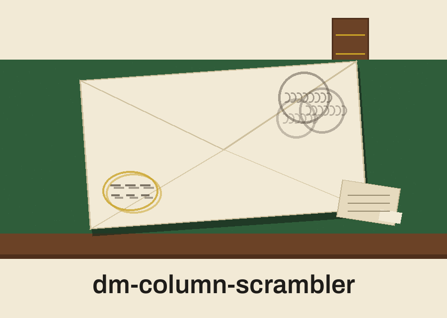

Dead Letter Office of the Capital. Catalogue copy.
dm-column-scrambler: Dead Letter Office of the Capital

One Permutation, Shared
Refused if It Points Home
Short Rows Padded
Long Rows Refused
Same Seed, Same Width, Same Order
Plate one: the operation
The program reads a CSV file. It keeps the header row names intact as a set, and writes a new file in which the columns stand in a shuffled order, the header and every data row rearranged by the same single permutation. Values move with their columns. Nothing inside a cell is altered, generated, or replaced. Relationships between columns grow harder to read at a glance, because neighbours change, while each column of contents survives whole under its own header. The README closing tagline places the tool among tools that generate or mask values; plate one corrects that in effect, because this program generates no values and masks nothing. Order is altered. Content is not.
Plate two: requirements
Python with its standard library only. The requirements file says so in a single comment and lists no package. The csv module and the random module do the work between them.
Plate three: install, with a correction
As printed in the README, the clone line names a strike headquarters organisation that is not this fleet. Correction, labelled as such: the line below names ShadowGuard-AI, hyphenated, ahead of the repo name, so no visitor carries the wrong line away.
git clone https://github.com/ShadowGuard-AI/dm-column-scrambler
Plate four: the true working form
The README usage line invokes a program file named after the repo, with a bracketed note in place of arguments. No such file exists in the repo. Correction, labelled as such: the code examples give the real form, and this plate follows them. The interpreter call, then main.py, then a placeholder for the input CSV path, then a placeholder for the output CSV path, with an optional seed flag after them.
python3 main.py [input CSV path] [output CSV path] [--seed N]
No real file name from any real dataset appears anywhere on this page.
Plate five: controls in parser order
Input file first, positional, required. Output file second, positional, required, described in the code as a path that must not resolve back to the input. Help follows, short h form, showing the help message and exiting. Seed closes the list, a long flag taking an integer, optional, and present so a shuffled order can be reproduced. The README list gives the seed flag with the words no description provided; the code describes it plainly as an optional seed for the random number generator, for reproducibility, and this plate restores that description.
Plate six: why the shuffle can be trusted
One permutation of column positions is drawn once. That same list of positions is applied to the header and then to every row, in turn. Sharing the permutation is the correctness of the whole tool. Shuffle the header on its own and the rows on theirs, and values would sit under wrong names with no error raised anywhere. That is the difference between scrambling and corruption.
Plate seven: the seed, honestly
When a seed is given, it is set on the shared random module before the single shuffle is drawn, so a run repeats exactly for a file with the same number of columns. The same seed handed to a file with a different column count draws a different permutation. That is expected behaviour, stated at full size, so nobody reports it as a defect. When no seed is given, the order is not reproducible.
Plate eight: the same file refusal
Before anything is written, the input and output paths are resolved. If they resolve to the same file, whether spelled identically, spelled with a relative prefix, given as an absolute path, or reached through a symlink, the run refuses, logs an error, and ends at exit 1. The refusal happens before any writing, so the input survives a mistaken invocation untouched. This repo treats that refusal as a headline rule rather than a detail.
Plate nine: row width rules
A data row carrying more fields than the header is refused: the run ends at exit 1 with an error naming the row number and its field count, so no value is discarded quietly. A data row carrying fewer fields is padded with empty fields, and the run logs a warning naming how many rows were padded and which row numbers they were. Row numbering in these messages counts the header as the first row, so the first data row is row two.
Plate ten: the remaining endings
An input file with no header row at all, an empty file in practice, ends at exit 1 with an error naming the file. A missing input file ends at exit 1. Any other failure during reading or writing is caught, logged, and also ends at exit 1. A clean run logs a success line naming both files and ends at exit 0 by completion.
Licence plate, closing
The README licence line as printed is a copyright line naming the strike headquarters organisation, and it stands in the preserved record below. Alongside it sits the separate LICENSE fact. That file carries the MIT License, and its holder line gives a pen name together with a single initial for the remaining name. The initial is not expanded on this site.
The preserved README record
Redaction note: a flagged sample output bearing an example value was described in the commission for this re-skin. The live README saved for this repo runs to 23 lines and holds no sample output and no such value, checked line by line, so no line was removed from the record below on that account, and no such value appears anywhere on this page or in the shipped README.
 # dm-column-scrambler Scrambles the order of columns in a CSV file while preserving headers, to obscure data relationships. Uses `csv` module. - Focused on Tools designed to generate or mask sensitive data with realistic-looking but meaningless values ## Install `git clone https://github.com/ShadowStrikeHQ/dm-column-scrambler` ## Usage `./dm-column-scrambler [params]` ## Parameters - `-h`: Show help message and exit - `input_file`: The input CSV file - `output_file`: The output CSV file. It must not be the input file: if the output path resolves to the input file, through the same spelling, a `./` spelling, an absolute path, or a symlink, the run refuses and exits 1 before any file is written. - `--seed`: No description provided ## Row width rules - A data row with more fields than the header is refused: the run exits 1 naming the row and its field count, so no field is silently discarded. - A data row with fewer fields than the header is padded with empty fields, and the run logs a warning naming the count and the padded rows. ## License Copyright (c) ShadowStrikeHQ